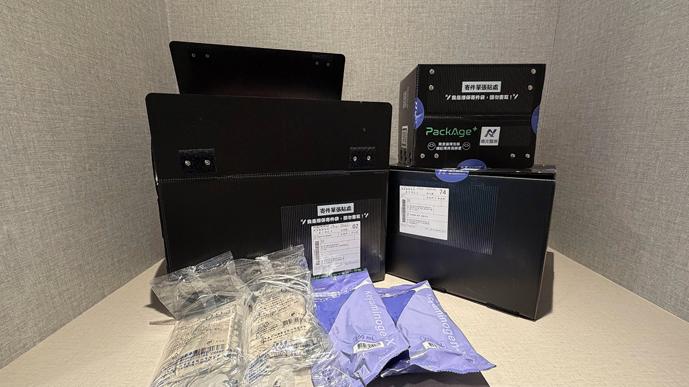
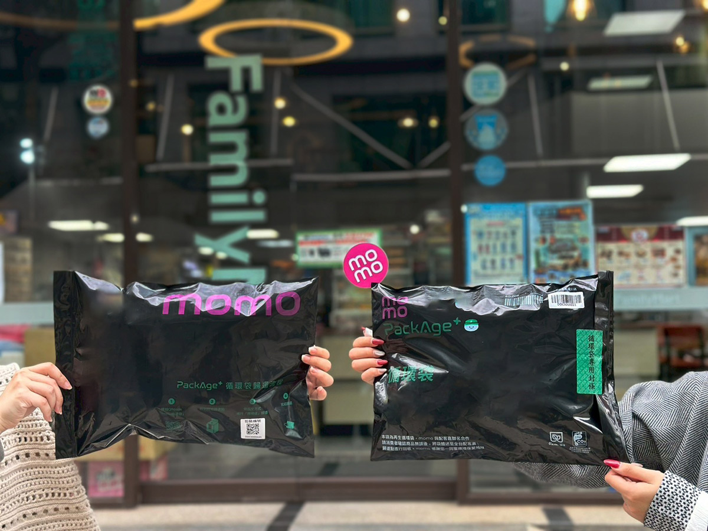
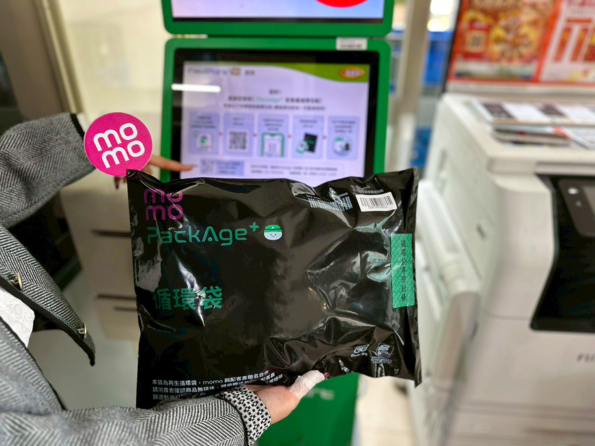
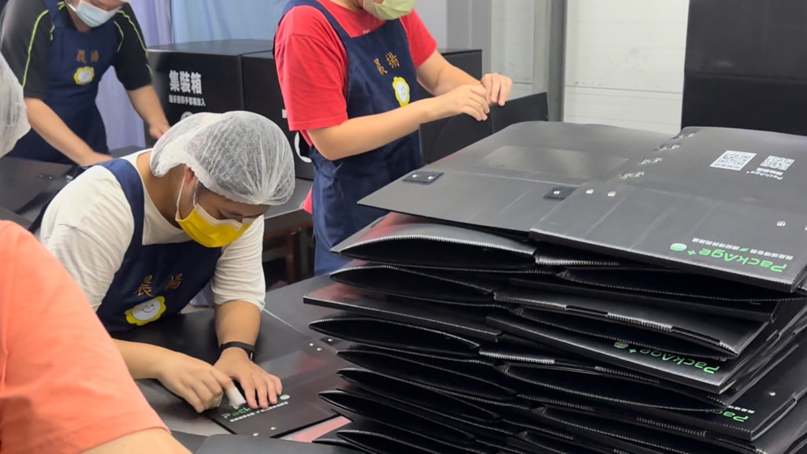

網購包裝拆完別急著丟！教你循環袋怎麼回收、歸還再利用
◎ 撰文／黎育如
◎ 圖片來源／配客嘉提供
◎ 發布日期／2026.08.20

◎ 撰文／黎育如
◎ 圖片來源／配客嘉提供
◎ 發布日期／2026.08.20
回顧疫情期間，網購加速成為了日常，台灣網路零售銷售額從2017年的2,283億元，成長至2021年的4,303億元。便利送到家的另一面，是每年約2.2億個網購包裝，以及拆封後迅速堆起的紙箱、塑膠袋。
不過結帳頁面也漸漸開始出現新的選項：循環包裝、減量包裝，甚至無包裝配送。對消費者而言，可能只是多按一個選項，但要讓一個袋子離開倉庫、送到家中，再順利回到系統裡，背後牽動的其實是多個節點的重新設計。
配客嘉執行長葉德偉認為，循環包裝並非把塑膠換成紙，或要求大家少用一個袋子，而是讓好的材料被使用得更久，最後仍能妥善回收。
許多減塑政策從「少用哪一種材料」出發，卻可能忽略紙、塑膠或其他材料，各有適合的使用情境，換了材質也不代表浪費自然消失。
葉德偉說，不同產業如科技業、醫療業、零售與外送，面對的條件完全不同，但都有循環的可行性。醫療包裝重視衛生與規格，外送涉及冷鏈與食安，科技廠則需要物流追蹤和倉儲管理。循環包裝因此不是一款袋子走天下，而是依照場景找到最合適的材質與流程。

▲ 配客嘉與12家醫療院所合作，導入循環包裝。（圖片來源／配客嘉提供）
有些設計甚至來自意料之外的人性。配客嘉早期曾推出顏色繽紛的包裝，卻發現消費者覺得好看，反而想留下來自用。後來改成黑色，一方面降低「收藏感」，也避免物流人員直接在袋上書寫資訊，讓污漬難以清除。
包裝上的條碼與RFID，功能也超過辨識用途，能成為企業改善物流流程的工具。當循環包裝被視為軟硬體整合服務，環保才有機會從額外負擔，變成營運的一部分。
然而，耐用不等於永續。包裝即使能使用數次，報廢後無處可去，仍可能成為另一批難處理的塑膠。
配客嘉選擇PP、PE、PET等市場上較普遍的材質，並盡可能採單一材質設計，讓回收端方便處理。特殊複合材料即使性能好，數量不足或難以分離，也很難進入既有回收體系。相較之下，單一PP循環箱在使用生命結束後，仍可交由既有回收商再製成新包裝或其他產品。
包裝結構也會影響循環次數，以與momo合作的循環袋為例，袋體使用再生塑料與部分新料製成，並透過離型帶摺疊封口，減少大量膠帶。少一道除膠程序，包裝受損較少，後端清潔人員也更省力。這些看似不起眼的細節，決定了一個包裝能否真的留在市場裡反覆流通。

▲ 配客嘉與大型電商合作的循環包裝。（圖片來源／配客嘉提供）
循環包裝常被歸類為「有環保意識的人才會做的事」，但配客嘉的經驗顯示，單靠理念很難形成穩定習慣。消費者收到包裝前是否知道要歸還、附近是否有據點、流程是否簡單，往往比一句支持永續更關鍵。
目前消費者歸還momo循環袋後，可取得平台綠活點數，也能領取配客嘉合作品牌的優惠。葉德偉觀察，同樣一張優惠券，直接發送不一定會被使用；當消費者完成歸還後，把優惠理解成「行動獎勵」，兌換率有時能提高近一倍。
這種設計也改變品牌與消費者的對話，傳統促銷容易落入價格競爭，循環包裝則把回購、會員經營與環境行動串在一起。有消費者收到循環袋後，主動拍照分享到社群，表達對品牌選擇的認同。包裹於是從一次交易的外殼，變成品牌價值最直接的第一印象。

▲ 到便利商店就可以歸還循環包裝，讓包裝回到系統裡。（圖片來源／配客嘉提供）
但誘因不是萬靈丹，平台導入前，必須先讓消費者理解歸還方法。內部也需要不同部門共同協調，回收回來的新舊包裝如何分級、倉儲人員怎麼辨識、流程會不會拖慢出貨，都是循環從理念進入現場時必須跨過的門檻。
對大型電商而言，物流與包裝是重要的碳排來源，循環包裝還帶來另一層意義，降低對海外原物料的依賴。
葉德偉說戰爭、貿易衝突與海運中斷，都曾讓石化與紙類原料價格劇烈波動，台灣高度仰賴進口，一旦供應受阻，包裝也會成為營運風險。讓既有材料在島內重複周轉、回收再製，雖然無法完全取代進口，卻能增加企業面對原料波動時的緩衝。
這也是循環包裝從「減塑選項」走向產業新機會的關鍵，它同時回應減碳、成本、會員經營、物流效率與供應鏈安全。
循環系統中後端，則是大量清潔、檢查與整理工作。回想2021年疫情期間，許多庇護工場原有的訂單驟減，原本有團體詢問能否用循環包裝出貨，配客嘉卻也找到了新的合作機會，把回收包裝交給學員清潔，創造較穩定、全年都可能存在的工作。

▲ 循環系統也能整合社福公益團體，讓社福夥伴負責清潔包裝。（圖片來源／配客嘉提供）
擦拭、消毒與檢查的程序相對清楚，讓部分身心障礙學員更容易上手，也能從完成工作中建立信心。目前配客嘉與全台30多個公益據點合作，每月創造約550人次工作機會，並依企業合作地點媒合鄰近清潔單位，避免包裝為了清洗而長距離移動。
這套流程今年也開始進入特殊教育課程。學生在校期間先熟悉工作步驟，畢業後進入庇護工場或小作所，便能銜接相近職能。
下一次網購結帳，看見「循環包裝」選項時，它不只是少丟一個袋子的象徵。真正的循環，發生在消費者願意帶回據點、企業願意改變流程、回收端接得住材料，也有人因這份工作得到更穩定的生活。


新聞部
副總經理 王結玲
陳致中・陳詩璧・胡瑞麒・華子琛・談雍雍・吳家瑜
節目部
T觀點／莊開文・吳家瑋・莊秀惠・趙昱涵
數位事業部
總監 郭瀧億
內容策展組／廖玉貞・彭嘉儀・林佳瑤・李佳綺
ESG永續發展部
賴盈文・蔣成偉・張玲玲・黎育如・徐新瑜

© TVBS Media Inc. All Rights Reserved｜聯利媒體股份有限公司